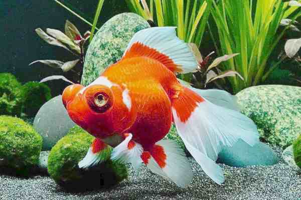

Goldfish

Origen : El Goldfish Veiltail probablemente tiene su origen en ejemplares importados a los Estados Unidos desde Japón en 1893. Apareció durante la década de 1920 y por entonces se conocía con el nombre de Filadelfia Veiltail Goldfish. Las siguientes hibridaciones en la historia del Veiltail se llevaron a cabo en Gran Bretaña. Morfología : Un Veiltail debe tener un cuerpo corto y redondeado con un contorno liso. El estándar del Veiltail requiere que el borde posterior de la aleta caudal esté libre de lóbulos que se bifurquen o sean puntiagudos. La aleta caudal no ha de ser rígida y debe alcanzar por lo menos tres cuartas partes de la longitud del cuerpo, el cual debe ser de al menos 5,5 centímetros de largo y la profundidad debe ser mayor que 2 / 3 de la longitud del cuerpo. Un Veiltail de calidad debe tener una sola aleta dorsal alta y erecta y todas las otras aletas pares.